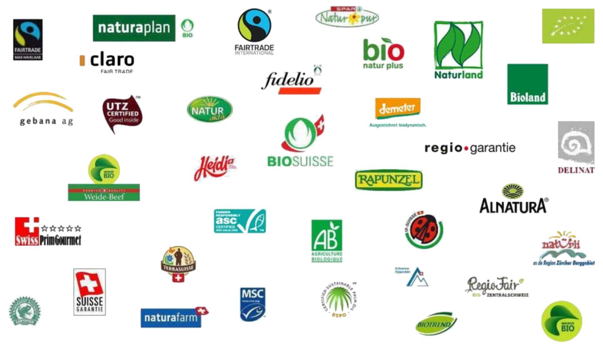

Qui sommes-nous ?
Nous sommes deux jeunes entrepreneurs qui aimons plus que tout la cuisine, ainsi nous transmettons cette passion à travers nos plats. Nous voudrions également lutter au travers de ce restaurant contre la mal-bouffe
et la pollution. En effet, nous préparons nos plats qu'avec des produits frais venant du marché local. Nous livrons également tous les plats dans des bocaux en verre pour éviter au maximum l'utilisation du plastique.
La livraison s'effectue d'ailleurs dans nos différents restaurants ou dans des points de relais partageant nos convictions.
Vous pourrez aussi vous informer dans notre local d'Ermont puisque nous y avons installé un tableau d'affichage sur l'actualité locale. Vous pourrez autant vous y attarder pour discuter avec nous ou pour goûter de
nouvelles recettes.
Nos Producteurs
Cognitis enim pilatorum caesorumque funeribus nemo deinde ad has stationes appulit navem, sed ut Scironis praerupta letalia declinantes litoribus Cypriis contigui navigabant, quae Isauriae scopulis sunt controversa.
Cognitis enim pilatorum caesorumque funeribus nemo deinde ad has stationes appulit navem, sed ut Scironis praerupta letalia declinantes litoribus Cypriis contigui navigabant, quae Isauriae scopulis sunt controversa.
